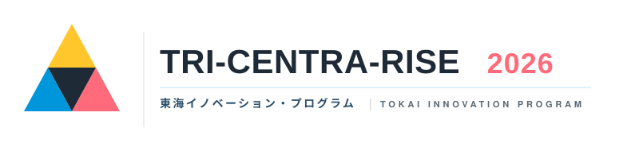

対象〈三重県・岐阜県・愛知県〉で活動する学生・若手人材へ
東海で独創的なアイデアと技術を有する若手人材へ 開発支援金100万円提供 & 5か月間のPoC実践プログラム

東海から、世界を驚かせるアイデアを。
三重・岐阜・愛知の若き才能と、ともに。
東海3県の15〜39歳、AI時代の新たなクリエータを目指す若手人材へ。PoC・事業化支援プログラム
各分野の第一線で活躍するPM（プロジェクトマネージャー）が個別伴走
期間は5か月間、さらに開発支援金 最大100万円※ 〈税込〉 提供
※ 参加者と事務局間で委託契約を締結し、活動に応じて支給。利用用途には制限があります。詳細は公式ホームページをご確認ください。
公式ホームページ
PROGRAM REQUIREMENTS
募集要項
選考要件・最新情報は必ず公式ホームページをご確認ください
- 実施期間
- 2026.8.8(土) → 2027.1.17(日)
- 開催場所
-
キックオフ 8/8(土)・9(日) アーバンネット名古屋ビル内会場を予定（愛知県名古屋市東区東桜1-1-10）
その他の対面開催日 東海3県（三重・岐阜・愛知）内会場（調整中）
- 応募方法
- 公式ホームページよりエントリー（7月開始予定・選考あり）
- 応募締切
-
2026.7.20(月) 23:59
1次募集
※ 合計10プロジェクト採択予定。1次で定員に達した場合、2次募集は実施しません